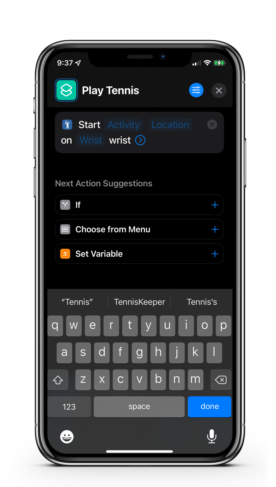
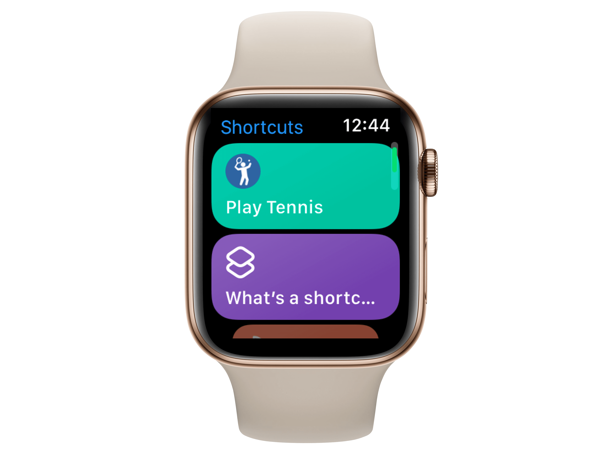

Siri Shortcuts
If you are one of those users that normally wear your Apple Watch on your non-hitting hand, this feature may be for you. You can now start TennisKeeper using Siri Shortcuts. With Siri Shortcuts, all you need to do is to wear your Apple Watch on your hitting hand before you start your workout. You do not need to change your Watch Orientation. TennisKeeper will use the values you supplied in your Shortcut to start your workout.
There are two ways to start TennisKeeper with Siri Shortcuts:
- Manually with the Shortcuts app
- Automatically with the Siri Watch Face.
Create a Shortcut on your iPhone
- Open the Shortcuts app on your iPhone.
- Go to the Apple Watch section. Tap + to add a new shortcut.
- Tap Add Action, then tap Apps. Look for TennisKeeper and tap.
- Select Start Workout and Add to Shortcut.
- Give your shortcut a name, for example Play Tennis. 
- Tap the 'x' button on the top right hand corner to save your shortcut.

Use the Shortcut on your Apple Watch
- Open the Shortcuts app on your Apple Watch.
- Tap the Play Tennis shortcut that you created. 
- Follow the prompts to start TennisKeeper on your Apple Watch.
You can also add the shortcut as a complication to your watch face.
Run the shortcut with Siri
On your Apple Watch, you can ask Siri to run your shortcut.
Just say "Hey Siri, Play Tennis" (or any name you choose for your shortcut).
Answer the questions to start your workout.